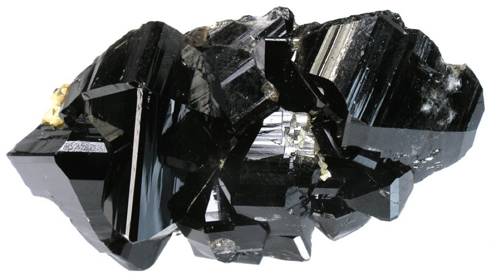
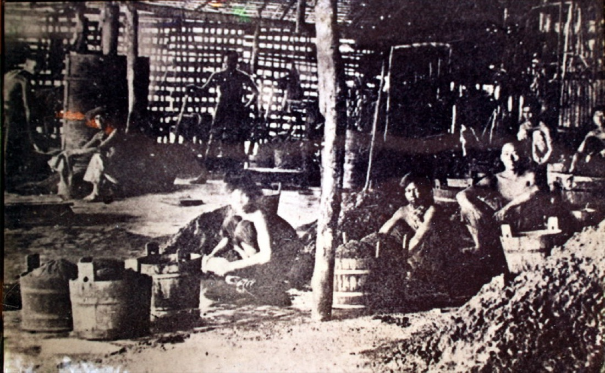
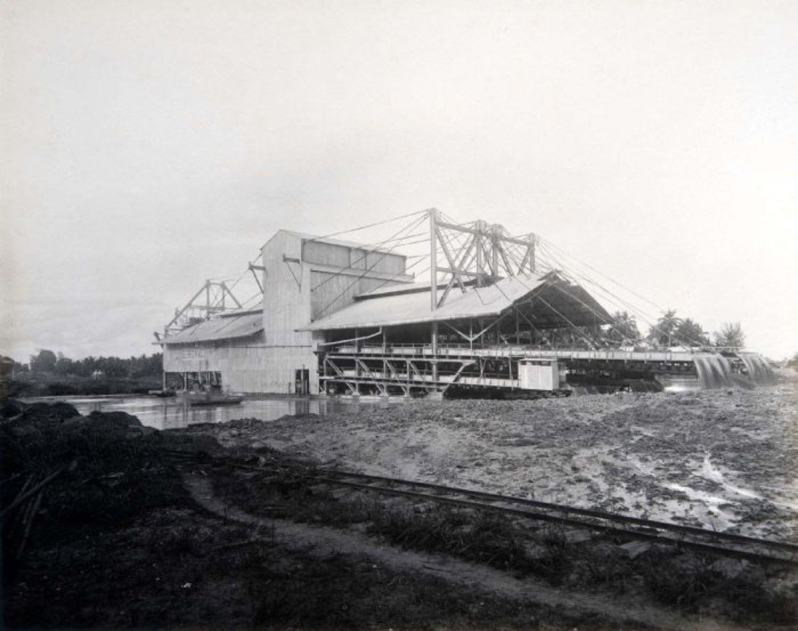

The Tin Island
For two hundred years, a soft grey metal pulled the world to Phuket. This is the story of how it changed the island — and what was left behind when it was gone.
What is tin?
Tin is one of the oldest metals humans have used. It is soft, silvery, and easy to melt — you can melt it on a kitchen stove. By itself it is too soft to make tools from, but mixed with copper it becomes bronze, one of the most important materials in human history.
Tin also coats the inside of food cans (the original "tin cans"), glues electronics together as solder, and was once used to make pewter cups and toys. For most of the 1800s and 1900s, the world wanted more tin every year. It was a quiet, useful, valuable metal — and Phuket sat on top of one of the richest tin fields in the world.
How Phuket got its tin
Long before there were people on Phuket, there were mountains. Hot melted rock pushed up from deep underground and cooled into granite. Inside that granite were small grains of a heavy black mineral called tin ore.
Over millions of years, rain wore the mountains down. Streams carried bits of rock toward the sea. The lighter pieces washed away, but the heavy tin grains sank and collected in the gravel of old riverbeds and beaches. Geologists call this kind of deposit an alluvial tin field. Phuket — and the seabed around it — has one of the largest in the world.
That single fact shaped almost everything that happened on the island for the next five hundred years.

The first miners
The earliest tin miners on Phuket were indigenous and Malay-speaking villagers who knew the rivers well. Their methods were simple: dig gravel from a streambed, swirl it in a shallow pan with water, and watch the heavy black tin grains settle to the bottom while the lighter sand washed away. This is called panning — the same way people pan for gold.
Small amounts of tin from these streams were sold to traders from China, India, and later Europe. Sailors who came to buy it sometimes called the island "Junk Ceylon" — a corruption of an older Malay name, Ujung Salang, meaning "Cape Salang." You can still find this name on old European maps.
The Hokkien wave
In the early 1800s the world's appetite for tin grew faster than Phuket's small mines could supply it. The kingdom of Siam needed workers. They came from southern China — tens of thousands of Hokkien-speaking men, mostly from the city of Xiamen, sailing south through Singapore and Penang to dig in Phuket's gravel.
They brought new tools, water-pumps, and a more organised way of mining. They also brought their families, their food, their gods, and their language. Many never went home. Their descendants built the Sino-Portuguese shophouses of Phuket Town, founded the Chinese shrines that still hold the Vegetarian Festival each year, and gave Phuket many of its most common surnames.

The dredge ships
By the early 1900s, the easy tin near rivers was almost gone. But there was still tin — a lot of it — under the seabed of Phuket Bay. To reach it, you needed a giant floating machine called a dredge.
In 1906 an Australian sea-captain named Edward T. Miles set up the Tongkah Harbour Tin Dredging Company in Phuket. He had a dredge built in Scotland, shipped piece by piece to the port of Penang, assembled there, and then towed across the Andaman Sea to Phuket Bay in late 1907. It was the first offshore tin dredge in Asia.
The dredges were the size of small buildings. They scooped up the seabed day and night, washed the tin out, and dumped the leftover mud back into the bay. By the 1960s, more than ten of them worked Phuket's waters. They needed money — lots of money — and most of that capital came from Britain, Australia, and Singapore.

The collapse
For most of the 20th century, the world price of tin was kept steady by an organisation called the International Tin Council. It bought up extra tin when the price fell and sold tin when the price got too high. For decades it worked.
In October 1985, it ran out of money. Almost overnight, the price of tin fell by more than half. Phuket's dredges, which only made money when tin was expensive, could no longer pay their workers or their fuel bills. One by one they stopped. Within a year, the tin mining industry that had defined the island for two centuries was essentially over.
Thousands of miners and dredge workers had to find new jobs. Some moved to rubber plantations in the hills. Others left the island entirely. And a few began to look at a new business that had been growing quietly in the south of the island: tourism.
After the tin
The shift from tin to tourism did not happen overnight. Through the 1970s, a handful of European backpackers had begun to find a long, empty beach on the west coast called Patong. By the 1980s a road had been cut over the hills to reach it. In 1986, a year after the tin crash, the French resort company Club Med opened on the next beach south, at Kata. The international airport — which had been a small runway used mostly for tin and rubber freight — was upgraded to take big passenger jets.
Within twenty years, Phuket had become one of the most-visited islands in the world. The tin was forgotten by most visitors. But the island still remembers, if you know where to look.
What you can still see today
- The lakes — many of Phuket's freshwater lakes, including the ones near the Heroines' Monument and around Saphan Hin, are old open-pit tin mines that filled with rainwater after they were abandoned.
- The Sino-Portuguese shophouses of Phuket Old Town were built with money made from tin, by the children of the Hokkien miners who dug it.
- The Tin Mining Museum in Kathu (north-central Phuket) preserves old dredge equipment, photographs, and workers' tools.
- Saphan Hin, at the southern tip of Phuket Town, is a public park built on tin tailings — the leftover sand and mud the dredges dumped there. The black sand on its beach is still partly tin.
- Hokkien surnames — Tan, Lim, Goh, Ong, Khoo — are common in Phuket Town families today, four or five generations after their ancestors came for the tin.
A note on the figures in this chapter: tin prices and worker counts are simplified for clarity. The story is more complicated in detail — different mines closed at different times, some kept operating into the 1990s, and a small amount of tin is still recovered today as a by-product of construction sand. But the broad shape — long boom, sudden crash, slow turn to tourism — is correct.